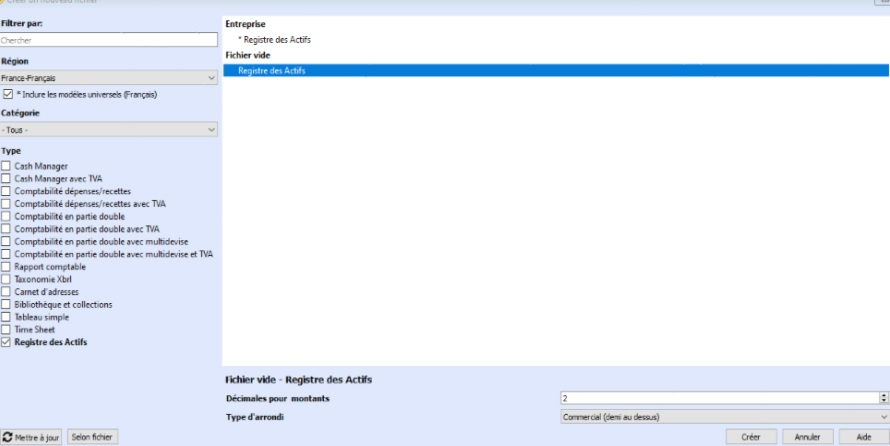
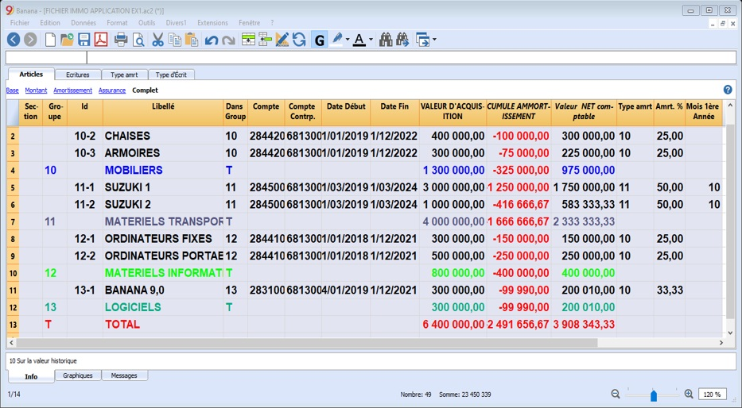
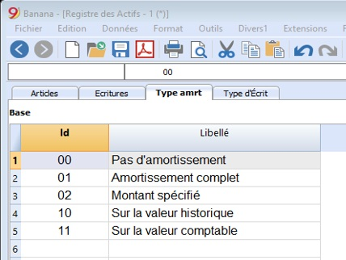
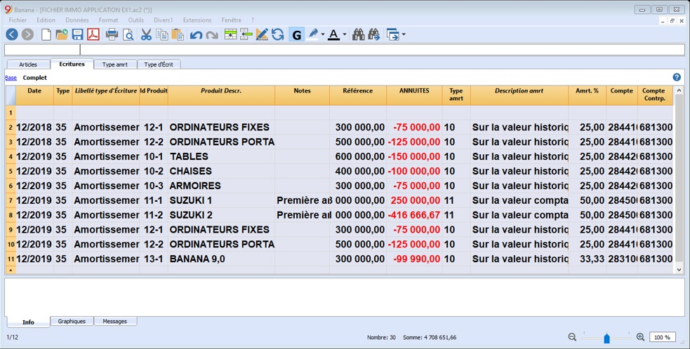
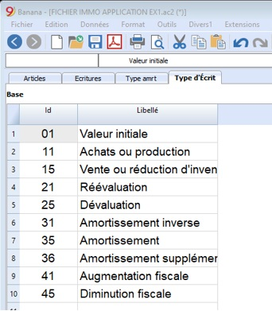
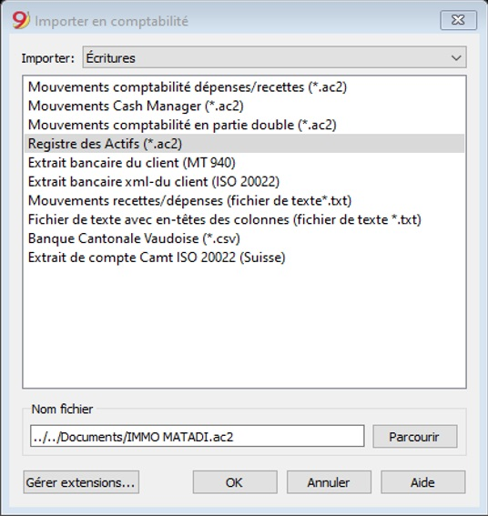
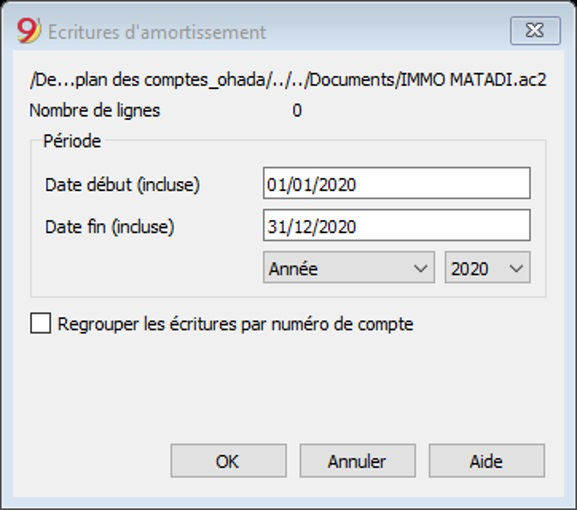
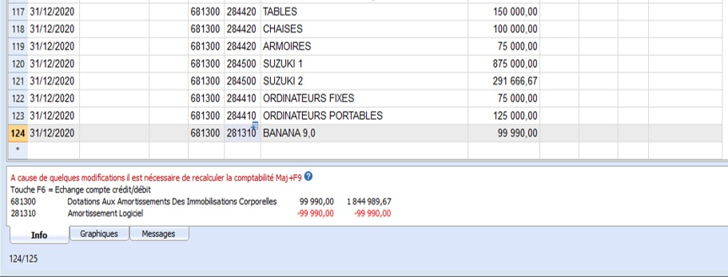

Activité 6
0001-01-01 00:00:00 +0000 UTCActivité 6: Gestion des actifs Immobilisés amortissables (Registre des actifs)
Contenu:
A. Fiche Pédagogique
1. Objectifs spécifiques :
Au terme de cette activité, le participant sera capable de (d'):
-
Créer le registre des biens amortissables,
-
Enregistrer les articles amortissables ;
-
Créer les lignes d’amortissements ;
-
Importer les écritures amortissements au journal centralisateur.
2. Supports :
-
OHADA, Acte uniforme relatif au droit comptable et à l’information financière et système comptable OHADA, Yaoundé le 15 février 2017 ;
-
Guide d’application OHADA ;
-
EPSP, DIPROMAD, Curriculum des Humanités Techniques Commerciales, Commerciale et Gestion, Kinshasa 2014 ;
-
SERNAFOR Technique, module de formation sur le système comptable OHADA niveau 4, 2018 ;
3. Méthodes et techniques :
Exposé, discussion dirigée, brainstorming et travail de groupe.
4. Durée :
120 minutes
5. Déroulement de l’activité :
| N° | Tâches | Méthodes et Techniques | Durée |
|---|---|---|---|
| 1 | Présenter l’activité et ses objectifs | Exposé | 5 min. |
| 2 | Expliquer :
|
Brainstorming | 15 min. |
| 3 | Constituer des sous-groupes pour :Créer le registre des actifs, enregistrer les biens amortissables, créer les lignes d’amortissement et importer c en comptabilité en partie double | Travail en groupe | 70 min. |
| 4 | En plénière : le rapporteur de chaque sous-groupe présente la production de son équipe suivie de mise en commun avec les membres des autre sous-groupes et du facilitateur. | Discussion dirigée | 20 min. |
| 5 | Questions de synthèse Expliquer :
|
Discussion dirigée | 10 min. |
B. Fiche Technique
1. Notions
Pour une gestion professionnelle des biens amortissables ; le programme calcule automatiquement l’amortissement en fonction des paramètres définis. Un historique est géré et les données peuvent ensuite être importées dans les comptes.
2. Contenu du registre des biens amortissables
Le fichier du répertoire des immobilisations se compose des tableaux suivants :
-
Tableau Articles - où l’on indique la liste des biens amortissables et les paramètres pour l’amortissement.
-
Tableau Ecritures - pour écrire les amortissements, les dévaluations achats et les réévaluations.
-
Tableau Type d’Amortissement
Indique les différents types d’amortissements.
- Tableau Type d’Ecriture - types d’opérations d’écriture.
3. Tenue du registre des biens amortissables
Voici, en résumé, les étapes de la gestion de votre registre :
3.1 Créer une comptabilité à partir d’un modèle en ligne
Comment procéder
-
Menu Fichier, commande Nouveau ;
-
Sélectionner la Région, la Catégorie et la typologie ;
-
Dans la liste type qui apparaît, crocher registre des actifs et votre droite sélectionner fichier vide ;
-
Cliquer sur le bouton Créer.

Saisissez le Tableau Articles
Le Tableau Articles Permet l’insertion de biens amortissables, de groupes apparentés et des paramètres pour le calcul de l’amortissement.

Le tableau contient les colonnes qui suivent ; celles indiquées par un astérisque (*) sont protégées et calculées directement par le programme :
-
Ligne Groupe : Dans cette ligne sont totalisés les montants des articles et des groupes.
-
Id Ligne: L’identification du bien.
-
Libellé: La description de l’objet
-
Ligne Dans Groupe: Comme Gr (totaliser dans le groupe indiquer)
-
Compte: Le compte de la comptabilité où est comptabilisé l’amortissement
-
Compte Contrepartie: Le compte de la dotation d’amortissement.
-
Date Début: La date d’achat du produit (ou de son entrée dans la comptabilité)
-
Date Fin : la date où le bien sera totalement amorti
-
Montant Début (valeur d’acquisition) : La valeur d’achat plus frais accessoires d’achat
-
Variation valeur Comptable (cumul d’amortissement) :* indique la somme des amortissements déjà pratiqués
-
Valeur Comptable (valeur nette comptable) :* indique la valeur d’acquisition diminuée de cumul d’amortissements
-
Type Amortissement Id
Le type d’amortissement qui est appliqué à cet objet.

-
Amortissement Pourcentage: Le pourcentage de l’amortissement.
-
Montant Amortissement : Un montant éventuel de l’amortissement au cas où l’amortissement n’est pas spécifié en pourcentage.
-
Mois Amortissement Première Année: Pour combien de mois l’objet doit-il être amorti la première année.
N.B : Le tableau d’articles a plusieurs colonnes mais vu le contexte de la RD Congo, d’autres colonnes sont désactivées pour ne rester qu’avec celles expliquées ci-dessus telle que illustrées dans le tableau des articles ci-haut.
4. Tableau Ecritures
Le tableau Écritures des biens amortissables contient les mouvements qui modifient la valeur historique, comptable ou fiscale d’une immobilisation. Des écritures sont saisies pour l’amortissement, la dévaluation et les réévaluations.
Avec la commande Créer écritures d’amortissement (à partir du menu Divers1), le programme calcule l’amortissement en fonction des paramètres définis et crée les lignes d’écritures. La valeur calculée peut être ajustée manuellement si nécessaire.

5. Les colonnes tableau d’écriture amortissement
-
Date: La date de l’opération
-
Id Type Ecriture et Libellé Type Ecriture*:
-
Produits Id : Coordonnées du bien.
-
Produit Description: La description du produit repris dans le tableau d’articles.
-
Notes : Une note supplémentaire relative à l’opération.
-
Variation valeur Comptable(annuité) : reprend le montant de l’amortissement de la période.
-
La description du code d’amortissement.
-
Amortissement Pourcentage: Le pourcentage appliqué de l’amortissement.

6. Importer lignes des amortissements en comptabilité
Pour importer des données, il faut :
-
Ouvrir le fichier de la comptabilité générale et du menu Compta1, cliquez sur la commande Importer en Comptabilité.
-
Dans la fenêtre qui s’ouvre, sélectionnez Écritures du menu déroulant Importer ; ensuite cliquez sur “Registre des actifs (*.ac2)" et, à l’aide du bouton Parcourir, sélectionnez le fichier du Registre des actifs.

Spécifier la période

Et automatiquement les écritures d’amortissement sont importées en comptabilité en partie double comme suit :
